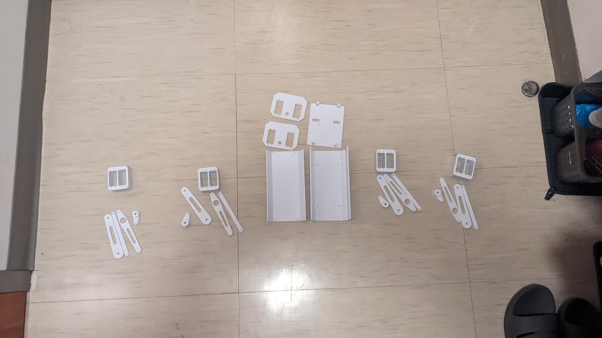

Every Part Printed

All of the 3D-printed parts for the dog are done. The body plates and side panels are laid out in the middle, with each of the four leg modules (a servo bracket, the leg links, and the servo horns) sorted around them. Next up is getting the hardware in so I can start assembling.